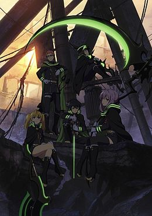

Сериал Последний Серафим/Owari no Seraph
В 2012 году таинственный вирус убивает жителей Земли старше 13 лет. Вместе с тем появляются и вампиры. Все человечество пало перед ними, так как сил бороться просто не было. Они уводят оставшихся людей под землю и предоставляют им «защиту» в обмен на кровь. Спустя четыре года после атаки вируса, двенадцатилетний Юичиро и его названный брат Микаэла планируют бежать вместе с остальными детьми из приюта Хякуя. Побег закончился неудачно: всех перебили, выбраться из-под земли смог только Юичиро. Впоследствии выясняется, что вируса больше нет, но земля осталась в руинах. В Японии властвует семья Хиираги, а также подконтрольная ей Японская имперская армия демонов. Главный герой решает стать воином и истребить вампиров.
Главные Герои:
Юичиро Хякуя — главный герой, член отряда лунных демонов. Когда ему было 12 лет, он попытался совершить побег вместе с «семьей» Хякуя, но вампиры настигли беглецов и выжил только Юи. Его главной целью является месть вампирам. К началу основного сюжета учится в академии демонических сил. Вспыльчивый и дерзкий. Сперва он не хотел заводить друзей, но затем познакомился с Синоа и Ёити и даже спас последнего во время обряда «приручения» демонического оружия. Юичиро на 10 % не человек. Его оружие — чёрный демон Асурамару, что принимает вид катаны.
Микаэла Хякуя — друг Юичиро, ставший вампиром благодаря вмешательству третьей прародительницы Крул Цепеш. Он заботился о «семье» Хякуя во времена, когда они жили у вампиров. Ради этого он даже давал свою кровь седьмому прародителю Фериду Батори. В 12 лет он вместе с Юи и остальными детьми из приюта Хякуя решил сбежать в мир людей. Добрый и рассудительный. Спустя четыре года он стал сражаться на стороне вампиров, но преследуя собственную цель — спасти Юитиро от людей, которые используют его. Он отказывается пить кровь людей, вместо этого потребляя кровь Крул Цепеш, оставаясь неполноценным вампиром. На всё готов, лишь бы с Юи всё было хорошо. В 36 главе был вынужден пить кровь Юичиро, с его согласия, из-за чего стал полноценным вампиром.
Шиноа Хиираги — член отряда лунных демонов, одноклассница Юичиро. Член семьи Хиираги. Она присматривает за Юичиро по поручению полковника Гурэна. Сначала относится к Юи только как к другу, но потом обнаруживает несколько более глубокие чувства к нему. Любит испытывать других. Её оружие — демон Сикама Додзи, принимающий вид косы.
Ёити Саотомэ — член отряда лунных демонов, одноклассник Юитиро. В детстве подвергся нападению вампиров, его старшая сестра Томоэ, укрывшая его, была убита, поэтому он жаждет отомстить им. Слабохарактерный и добрый, что и послужило причиной захвата демоном во время обряда «приручения». Его оружие — чёрный демон Геккоин, принимающий вид лука.
Сихо Кимидзуки — член отряда лунных демонов, одноклассник Юитиро. Есть младшая сестра Мирай, поражённая неизвестным вирусом, вступил в отряд, желая продвинуться в получении реальной возможности для её лечения. Ему приходится много работать, чтобы быть наравне с Юи. Он идет на всё ради победы. Оружие Сихо — Кисэки О, чёрный демон принимающий облик пары коротких мечей.
Мицуба Сангу — наиболее натренированный член отряда лунных демонов. Мицуба состояла в отряде по истреблению вампиров с 13-ти лет. Из-за того, что по вине её беспечного отношения к своей жизни умер член её предыдущего отряда, сосредоточена на командной работе. Её демон — демон Тэндзирю, принимающий вид удлиненного топора.
Гурэн Ичиносэ — полковник Японской Имперской Армии Демонов, наставник Юи. Осведомлен обо всех действиях армии, в том числе и об нечеловеческой стороне Юитиро. Хоть Гурэн и делает вид, что ему плевать на судьбу подопечных, он сделает всё, чтобы их спасти. Его оружие — Mahiru-no-Yo, чёрный демон принимающий образ катаны.
|
 |